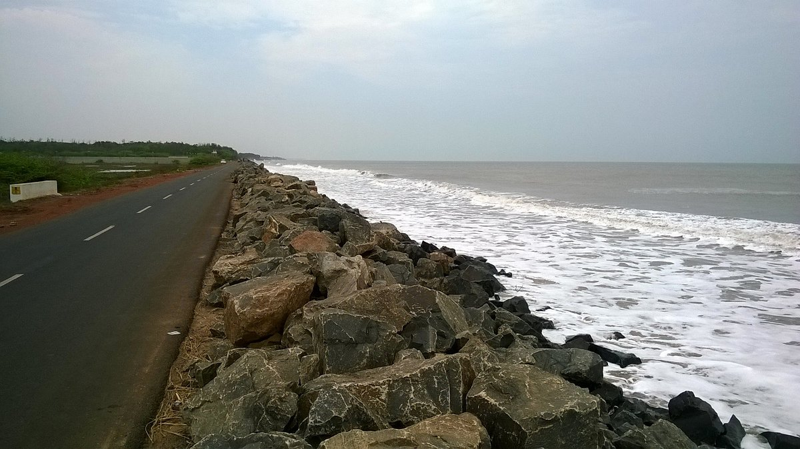
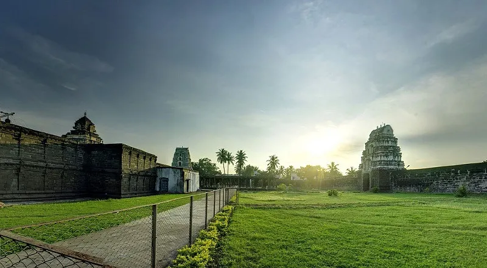

Kakinada district is a district in the Coastal Andhra Region in the Indian state of Andhra Pradesh.
With Kakinada as its administrative headquarters, it was proposed on 26 January 2022 to become one
of the resultant twenty six districts in the state after the final notification has been issued on
4 April 2022 by the government of Andhra Pradesh. The district was formed from Kakinada and Peddapuram
revenue divisions from East Godavari district.Incidentally, during earlier times, the region comprising
towns Pithapuram, Kakinada and Peddapuram were referred as Polnaud or Prolunadu (prōlunāḍu), which now
roughly corresponds to the areas in this district.
The total Geographical area of the District is 3.01979 Lakh Hect. During 2019-20 the area covered by Forest
is 0.33 Lakh Hects., which forms 10.92% to the total geographical area. The rest is distributed among Barren
and uncultivable land about 4.66% and Land put to Non- agricultural uses about 20.10%. The Net area Sown is
1.53 Lakh Hects., forming 50.69% to the total geographical area. The total cropped area in the district is
2.42 Lakh Hects. The area sown more than once is 0.88 Lakh Hects.
The proposed Polavaram Project across Godavari also serves the needs of kakinada Districts. The Yeleru Irrigation
channels covers Peddapuram, Pithapuram, Prathipadu, Jaggampeta, Kirlampudi and Yeleswaram Mandals. The Thandava
and Pampa river channels supply water to a limited number of villages in Tuni, Thondangi & Kotananduru Mandals.
In upland area there are a few irrigation tanks fed by hill streams. All other tanks, mainly depends on rain. A
good number of tube wells were sunk to supplement ground water irrigationlike in uplands Mandals, Surampalem
Project is in use and Bhupathipalem, Musurumilli irrigation projects are also in use at agency area.
| District headquarters | Kakinada |
|---|---|
| Revenue divisions | Kakinada,Peddapuram |
| Cities | Kakinada |
| Towns | Gollaprolu,Peddapuram,Pithapuram, Samalkota,Tuni,Yeleswaram |
| Census towns | Chiidiga,Ramanayyapeta,Suryaraopeta |
| Villages | Pasaruginne |